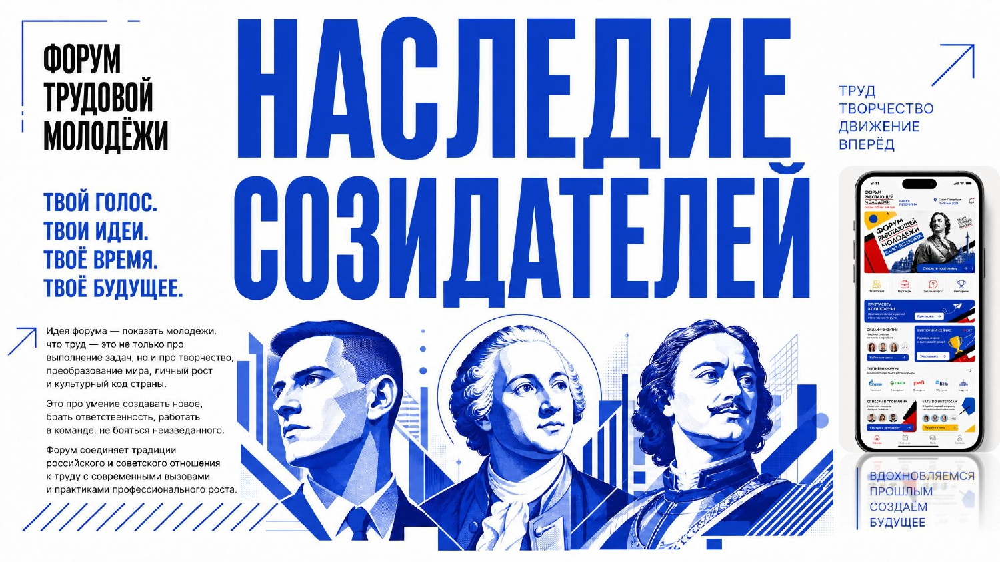
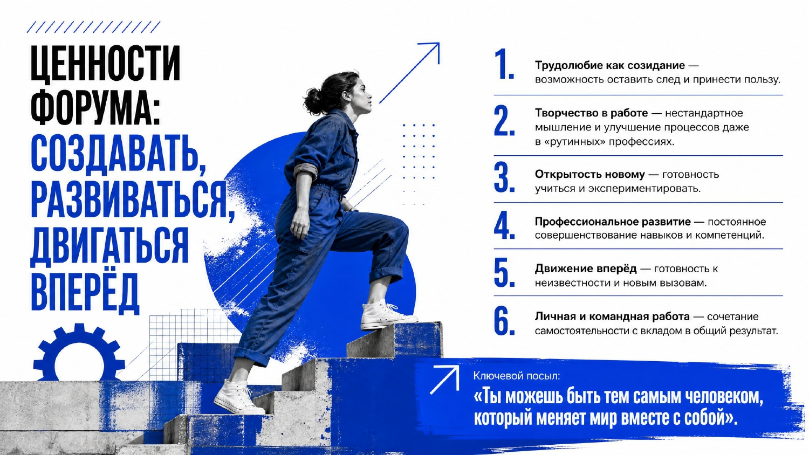
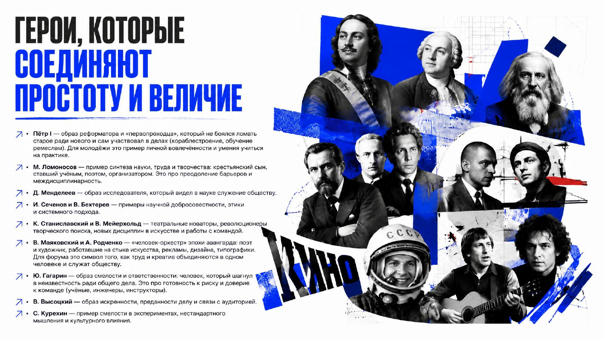
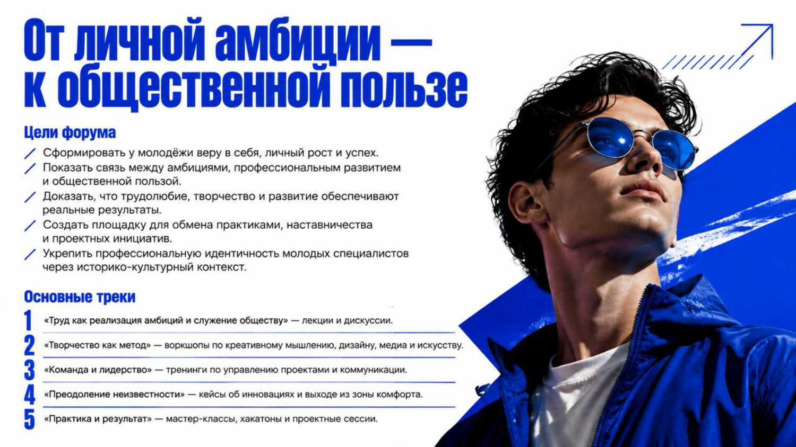
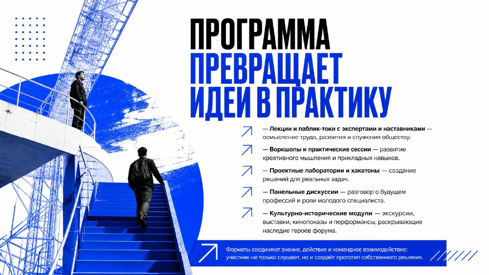
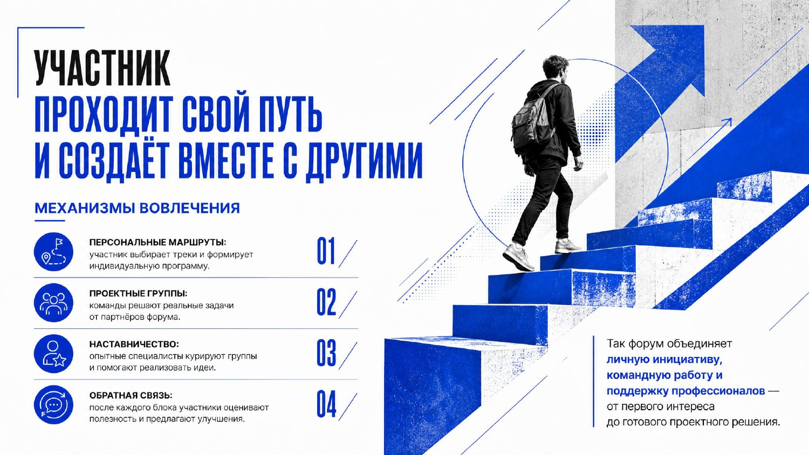

Труд как реализация амбиций и служение обществу
Лекции и дискуссии
Форум
трудовой
молодёжи
Твой голос.
Твои идеи.
Твоё время.
Твоё будущее.

До старта
Вдохновляемся прошлым —
создаём будущее
Идея форума — показать молодёжи, что труд — это не только про выполнение задач, но и про творчество, преобразование мира, личный рост и культурный код страны.
Это про умение создавать новое, брать ответственность, работать в команде, не бояться неизведанного.
Форум соединяет традиции российского и советского отношения к труду с современными вызовами и практиками профессионального роста.
участников
тематических треков
спикеров и наставников
дня насыщенной программы

Трудолюбие как созидание — возможность оставить след и принести пользу.
Творчество в работе — нестандартное мышление и улучшение процессов даже в «рутинных» профессиях.
Открытость новому — готовность учиться и экспериментировать.
Профессиональное развитие — постоянное совершенствование навыков и компетенций.
Движение вперёд — готовность к неизвестности и новым вызовам.
Личная и командная работа — сочетание самостоятельности с вкладом в общий результат.
Ключевой посыл:
«Ты можешь быть тем самым человеком, который меняет мир вместе с собой»

Лекции и дискуссии
Воркшопы по креативному мышлению, дизайну, медиа и искусству
Тренинги по управлению проектами и коммуникации
Кейсы об инновациях и выходе из зоны комфорта
Мастер-классы, хакатоны и проектные сессии


* Расписание-заглушка, заменим на актуальное.
Участник выбирает треки и формирует индивидуальную программу.
Команды решают реальные задачи от партнёров форума.
Опытные специалисты курируют группы и помогают реализовать идеи.
После каждого блока участники оценивают полезность и предлагают улучшения.

Так форум объединяет личную инициативу, командную работу и поддержку профессионалов — от первого интереса до готового проектного решения.
Будь созидателем: сегодня ты учишься, завтра — меняешь мир.
Здесь будет карта